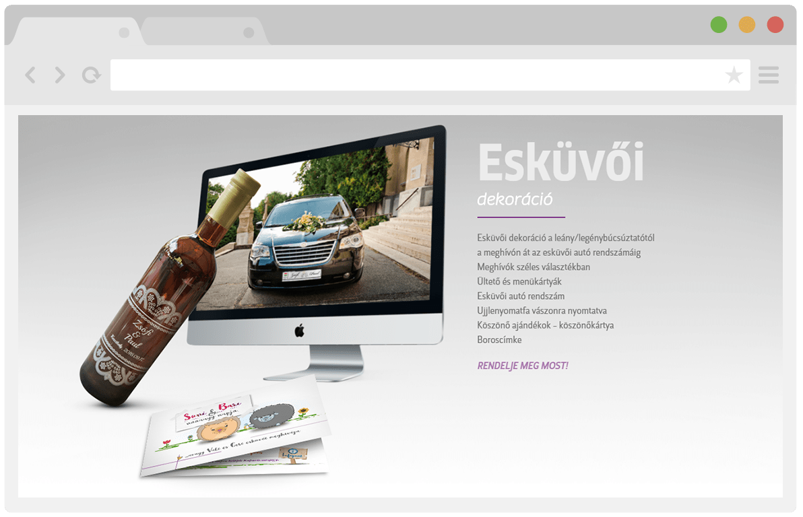
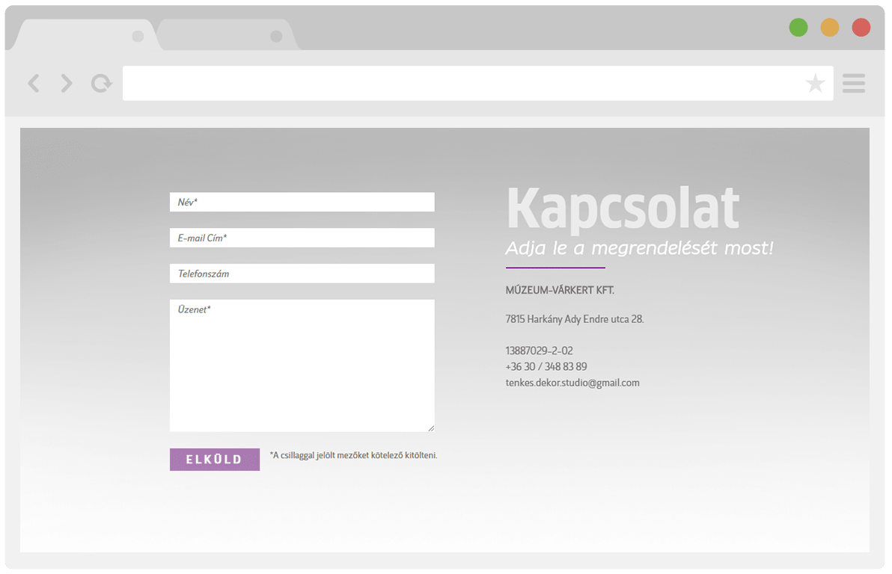

- HTML5
- CSS3
- Javascript
- JQuery
- Bootstrap
Projekt célja
A projekt célja az volt, hogy egy előre megadott Photoshop-ban készült designt konvertáljak át pixel pontosan weblappá.
Design
A weblap design-nál teljesen az előre megadott psd-re hagyatkoztam.
Technológiák
A technológiánál szimpla HTML5-t használtam a struktúra kialakításához és CSS3-at a desighoz.
Projekt határidő
Projekt határidő nem volt meghatározva. A teljes psd design weblappá konvertálása 1 hét alatt készült el.
Projekt link
A weblap még nem került fel szerverre viszont a projekt képek teljesen bemutatják, hogyan is néz ki kész állapotban.
Projekt képek

